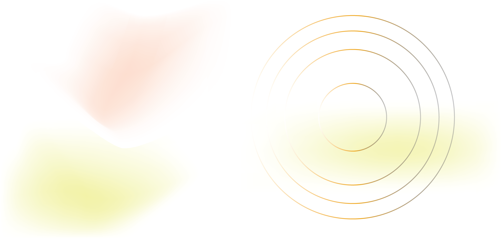
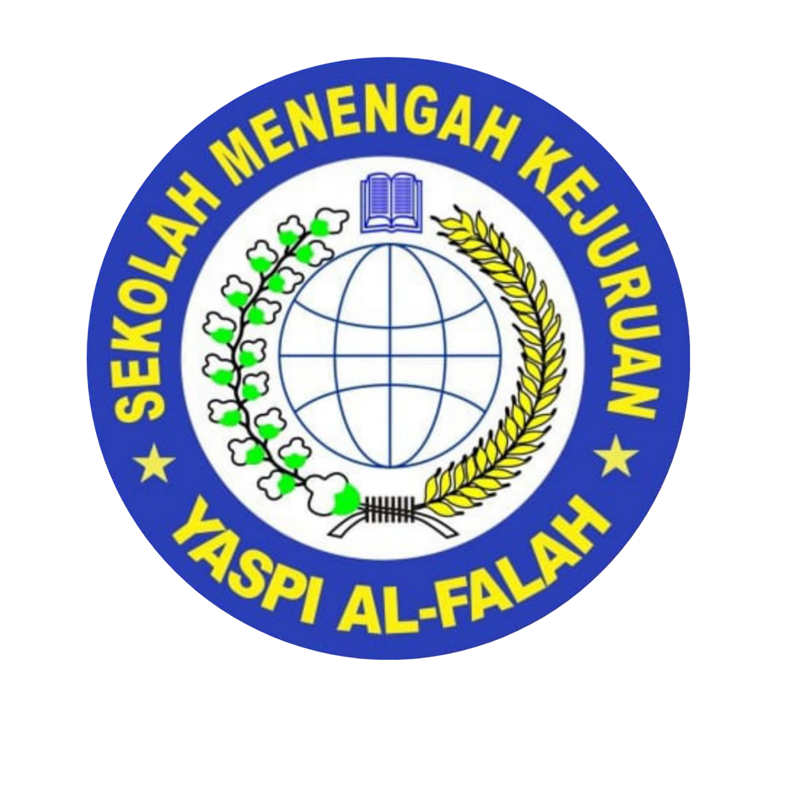
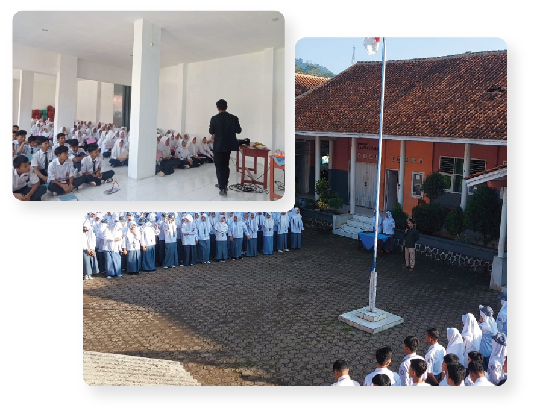
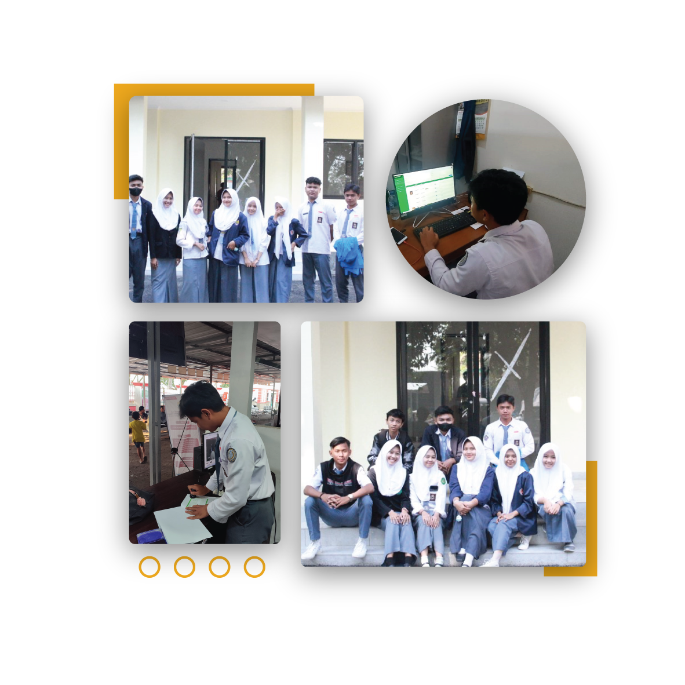

Lulusan SMK Jurusan Rekayasa Perangkat Lunak yang fokus pada
pengembangan, pengoperasian, dan pemeliharaan perangkat lunak.
Memiliki pengalaman dalam berorganisasi dan kemampuan komunikasi
dengan baik. Saat ini, memiliki keinginan untuk mengembangkan
keterampilan dalam lingkup profesional.



Pendidikan
SMK YASPI AL FALAH | 2021-2024
Jurusan Rekayasa Perangkat Lunak Nilai 88.00/100.00

Pengalaman Kerja
Praktik Kerja Lapangan (PKL) Dinas Kependudukan dan
Pencatatan Sipil | 2023-2023